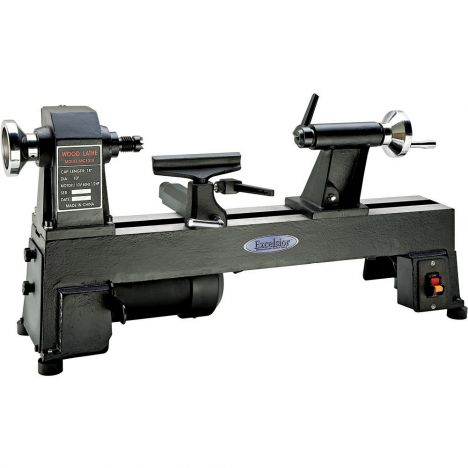

Turning Pens
Turning pens is a hobby I recently picked up. It's tremendously relaxing, you can make some really cool writing instruments that people really enjoy getting as gifts.
The main items you'll use
Tools
Turning tools
A lathe

Other Items and Accessories
A four-jaw chuck
A pen turning mandrel
A pen kit
Superglue
Bushings to fit your pen kit
Two local sources for tools and materials